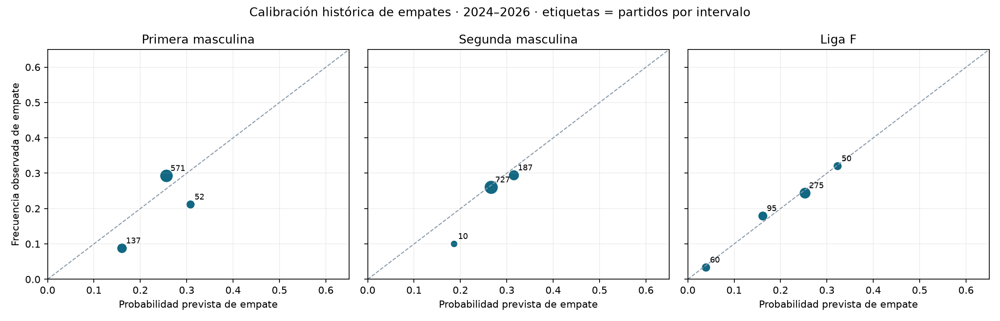

19 de octubre de 2026 · Primera, Segunda y Liga F.
Investigación retrospectiva. Los periodos históricos ya se habían inspeccionado. Estas diferencias sirven para escoger qué investigar; cualquier cambio de modelo necesita una evaluación prospectiva propia. El protocolo 50/50 y el predictor actual se conservan.
Log loss penaliza especialmente equivocarse con mucha confianza. En log loss y Brier, un valor menor indica mejores probabilidades.
| Competición | Partidos | Log loss ↓ | Brier ↓ | Acierto favorito | Empate previsto | Empate observado |
|---|---|---|---|---|---|---|
| Primera masculina | 760 | 0.97232 | 0.57606 | 53.2% | 24.3% | 25.0% |
| Segunda masculina | 924 | 1.04491 | 0.62875 | 46.5% | 27.5% | 26.5% |
| Liga F | 480 | 0.88658 | 0.52211 | 60.0% | 21.5% | 21.2% |
Los promedios de empate cercanos no garantizan buena calibración en todos los rangos. El gráfico muestra tamaños de muestra y la frecuencia observada por intervalo.

| Competición | Partidos emparejados | LL modelo | LL mercado | LL mezcla 50/50 retrospectiva |
|---|---|---|---|---|
| Primera masculina | 9 | 0.86342 | 0.81124 | 0.83630 |
| Segunda masculina | 15 | 1.03765 | 0.99184 | 1.01237 |
| Liga F | 0 | Sin cuotas archivadas | — | — |
Se verifica el sellado de los estudios y se conserva el primer registro por encuentro. Se excluye el partido abandonado. La comparación de mercado contiene pocas jornadas, por lo que no se presenta un intervalo que sugiera una precisión injustificada. La mezcla de esta tabla es un cálculo retrospectivo.
| Fecha | Partido | Resultado 1X2 | P(1) / P(X) / P(2) | Log loss |
|---|---|---|---|---|
| 2024-11-30 | FC Barcelona – UD Las Palmas | 2 | 84.2% / 11.4% / 4.5% | 3.11025 |
| 2024-12-15 | FC Barcelona – CD Leganés | 2 | 82.1% / 12.2% / 5.7% | 2.86869 |
| 2026-03-02 | Real Madrid CF – Getafe CF | 2 | 81.2% / 12.7% / 6.2% | 2.78520 |
| 2025-04-05 | Real Madrid CF – Valencia CF | 2 | 78.1% / 14.8% / 7.1% | 2.64579 |
| 2025-12-07 | Real Madrid CF – RC Celta de Vigo | 2 | 76.6% / 14.6% / 8.8% | 2.42943 |
| 2026-05-13 | Villarreal CF – Sevilla FC | 2 | 71.7% / 17.3% / 11.1% | 2.20183 |
| 2025-02-01 | RCD Espanyol de Barcelona – Real Madrid CF | 1 | 11.6% / 18.9% / 69.5% | 2.15159 |
| 2025-09-13 | Athletic Club – Deportivo Alavés | 2 | 67.2% / 21.0% / 11.8% | 2.13572 |
| Fecha | Partido | Resultado 1X2 | P(1) / P(X) / P(2) | Log loss |
|---|---|---|---|---|
| 2025-02-03 | Levante UD – Racing Ferrol | 2 | 64.7% / 23.0% / 12.2% | 2.09973 |
| 2025-09-14 | Racing Santander – Cultural Leonesa | 2 | 66.4% / 20.5% / 13.1% | 2.03156 |
| 2026-01-10 | Racing Santander – Real Zaragoza | 2 | 66.4% / 19.1% / 14.5% | 1.93427 |
| 2025-12-13 | Real Valladolid CF – FC Andorra | 2 | 58.4% / 26.3% / 15.3% | 1.88026 |
| 2025-09-28 | Real Valladolid CF – Cultural Leonesa | 2 | 60.3% / 24.3% / 15.4% | 1.87040 |
| 2025-11-22 | SD Eibar – Real Zaragoza | 2 | 59.7% / 24.3% / 16.0% | 1.83307 |
| 2024-12-15 | Sporting Gijón – Racing Ferrol | 2 | 57.4% / 26.5% / 16.1% | 1.82643 |
| 2024-09-16 | UD Almería – CD Castellón | 2 | 57.7% / 25.5% / 16.7% | 1.78733 |
| Fecha | Partido | Resultado 1X2 | P(1) / P(X) / P(2) | Log loss |
|---|---|---|---|---|
| 2025-02-01 | FC Barcelona [F] – Levante UD [F] | 2 | 96.6% / 2.6% / 0.8% | 4.80887 |
| 2025-11-02 | Real Sociedad [F] – FC Barcelona [F] | 1 | 1.6% / 4.8% / 93.6% | 4.12623 |
| 2025-01-19 | Real Madrid CF [F] – SD Eibar [F] | 2 | 86.9% / 9.6% / 3.5% | 3.35166 |
| 2025-03-23 | FC Barcelona [F] – Real Madrid CF [F] | 2 | 80.7% / 11.5% / 7.8% | 2.54979 |
| 2025-01-05 | Levante UD [F] – VCF Femenino [F] | 2 | 76.7% / 15.4% / 7.9% | 2.54452 |
| 2026-04-26 | Real Madrid CF [F] – Logroño United [F] | X | 88.5% / 8.4% / 3.1% | 2.47498 |
| 2026-01-17 | Atlético de Madrid [F] – RCD Espanyol de Barcelona [F] | 2 | 74.3% / 16.2% / 9.5% | 2.35850 |
| 2025-03-15 | Real Madrid CF [F] – Deportivo Abanca [F] | X | 87.0% / 9.6% / 3.4% | 2.34449 |
El clasificador de Primera sigue siendo boosting; el de Segunda, regresión logística. Ambos se entrenan con las dos ligas, como en el sistema original, con coeficientes mensuales y resultados anteriores al corte. El peso del clasificador en la probabilidad final permanece en el 25 %. Se reproduce el clasificador original en tres cortes para verificar la compatibilidad con el archivo.
Mejor resultado en el periodo de selección: Ataque y defensa: estados dinámicos. El intervalo describe el remuestreo de semanas y no corrige la selección repetida de modelos.
| Variante | Variables del clasificador | LL 2022–24 | LL 2024–26 | Δ LL frente a base | Intervalo exploratorio 95 % | Brier 2024–26 |
|---|---|---|---|---|---|---|
| Modelo actual | 116 | 0.97505 | 0.97232 | 0.00000 | [0.00000, 0.00000] | 0.57606 |
| Rivales: rendimiento ajustado | 122 | 0.97473 | 0.97285 | 0.00053 | [-0.00112, 0.00214] | 0.57651 |
| Ataque y defensa: estados dinámicos | 122 | 0.97472 | 0.97196 | -0.00036 | [-0.00188, 0.00121] | 0.57600 |
| Tiempo desde el último partido conocido | 122 | 0.97546 | 0.97210 | -0.00022 | [-0.00109, 0.00063] | 0.57591 |
| Congestión de liga | 125 | 0.97552 | 0.97211 | -0.00021 | [-0.00118, 0.00067] | 0.57602 |
| Cambios de división | 122 | 0.97481 | 0.97227 | -0.00005 | [-0.00070, 0.00058] | 0.57600 |
Mejor resultado en el periodo de selección: Tiempo desde el último partido conocido. El intervalo describe el remuestreo de semanas y no corrige la selección repetida de modelos.
| Variante | Variables del clasificador | LL 2022–24 | LL 2024–26 | Δ LL frente a base | Intervalo exploratorio 95 % | Brier 2024–26 |
|---|---|---|---|---|---|---|
| Modelo actual | 52 | 1.04868 | 1.04491 | 0.00000 | [0.00000, 0.00000] | 0.62875 |
| Rivales: rendimiento ajustado | 58 | 1.04843 | 1.04553 | 0.00062 | [-0.00001, 0.00122] | 0.62919 |
| Ataque y defensa: estados dinámicos | 58 | 1.04936 | 1.04507 | 0.00016 | [-0.00065, 0.00101] | 0.62897 |
| Tiempo desde el último partido conocido | 58 | 1.04828 | 1.04476 | -0.00015 | [-0.00085, 0.00076] | 0.62867 |
| Congestión de liga | 61 | 1.04927 | 1.04449 | -0.00041 | [-0.00136, 0.00047] | 0.62838 |
| Cambios de división | 58 | 1.04837 | 1.04573 | 0.00082 | [0.00021, 0.00149] | 0.62938 |
El calendario utiliza fechas históricas finales y solo partidos de liga. No incluye Copa, Europa, bajas o xG ni certifica cuándo se publicaron los horarios.
Comprobación adicional sobre las mismas predicciones semanales archivadas, manteniendo la calibración final y cambiando solo el peso del modelo dinámico completo de precisión 48. Son diagnósticos históricos sin selección de peso para producción.
| Competición | Peso dinámico | LL 2024–26 | Δ LL frente al modelo actual |
|---|---|---|---|
| Primera masculina | 0 | 0.97232 | 0.00000 |
| Primera masculina | 0.25 | 0.97391 | 0.00160 |
| Primera masculina | 0.5 | 0.97748 | 0.00516 |
| Segunda masculina | 0 | 1.04491 | 0.00000 |
| Segunda masculina | 0.25 | 1.04404 | -0.00087 |
| Segunda masculina | 0.5 | 1.04497 | 0.00007 |
| Liga F | 0 | 0.89509 | 0.00852 |
| Liga F | 0.25 | 0.88658 | 0.00000 |
| Liga F | 0.5 | 0.88187 | -0.00470 |
| Competición | Segmento | Partidos | Log loss | Acierto favorito |
|---|---|---|---|---|
| Primera masculina | Favoritos con probabilidad ≥70 % | 98 | 0.52304 | 86.7% |
| Primera masculina | Partidos con ascendidos de Segunda | 216 | 0.91236 | 59.3% |
| Segunda masculina | Favoritos con probabilidad ≥70 % | 3 | 0.33391 | 100.0% |
| Segunda masculina | Partidos con clubes sin temporada previa en las ligas cubiertas | 312 | 1.05791 | 45.2% |
| Liga F | Favoritos con probabilidad ≥70 % | 125 | 0.53123 | 82.4% |
| Liga F | Partidos con clubes sin temporada previa en las ligas cubiertas | 116 | 0.91821 | 54.3% |
Los ascendidos a Primera se identifican por participación anterior en Segunda. «Nuevo en ligas cubiertas» también puede indicar falta de historial; no equivale automáticamente a ascenso confirmado. Las diferencias entre segmentos pueden reflejar rivales y dificultad distintos.
Resultados completos · Diagnóstico y peores errores · Comparaciones dentro de los mismos segmentos · Protocolo de investigación